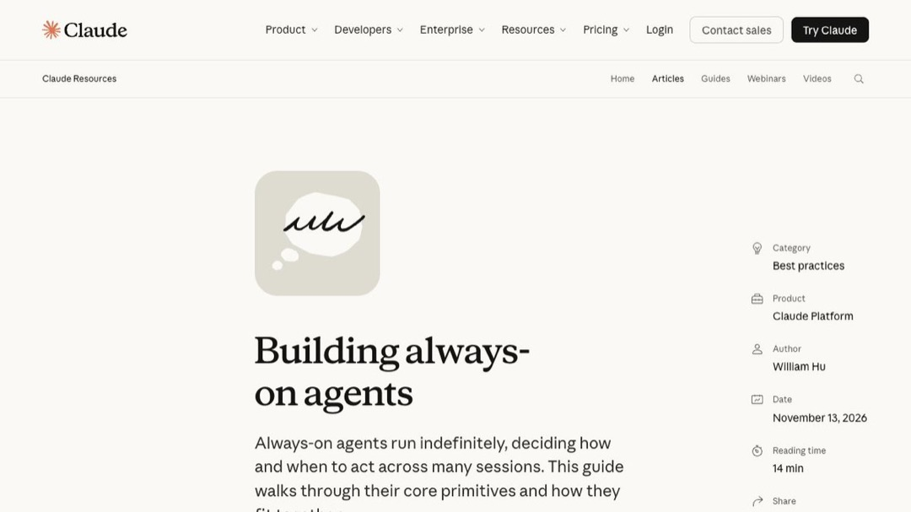
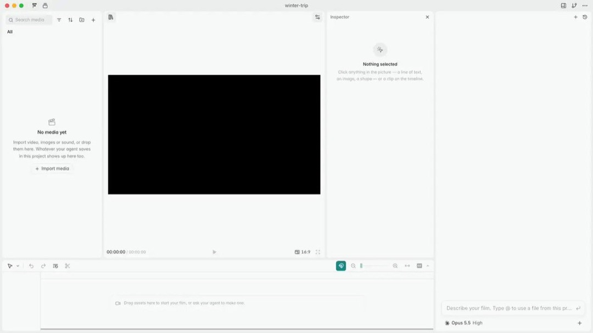
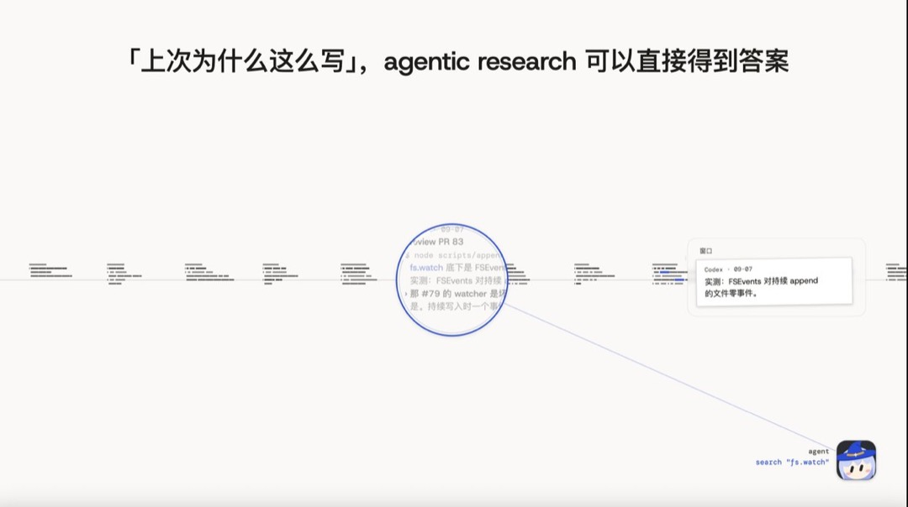
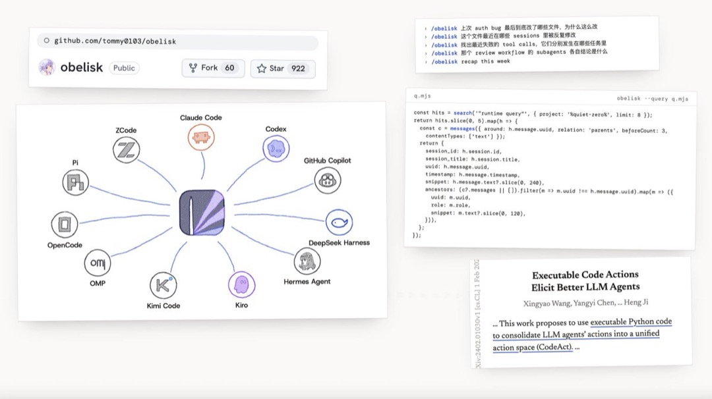
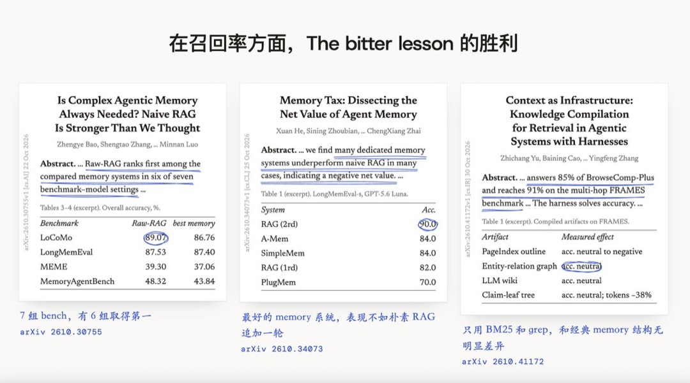
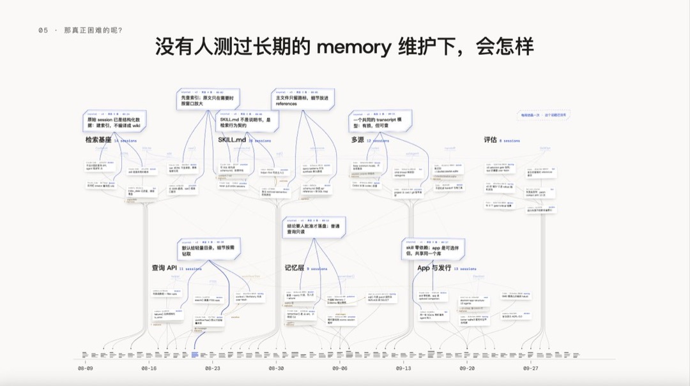

本期速览
03 Anthropic 常驻Agent五要素
04 Antigravity 编排子Agent
05 OpenFilm 用网页代码做视频
08 DevTools MCP 支持日志断点
09 Claude Code 推出CodeMode
10 Obelisk 原始历史即Agent记忆
01｜Fable 5.2 生成97KB水下世界
来源（X） · @ai_funss · 2026-11-15 21:48
97 KB 什么概念？平时随便发张图片可能都比它大好几倍
，它把水下场景、光影和游泳交互全装进去了！！
看样子大概率没带笨重的外部资产
全靠代码和着色器在浏览器里实时算出来
确实是目前看过最惊艳的例子之一，Fable太牛了！！！
02｜dsbot 用3个常驻Bot管理开发
来源（X） · @Fei2411 · 2026-11-15 19:36
就拿 dsbot 本身的开发工作举例，我基本上只和 2-3 个 bot 来沟通，一个主要沟通我称为“助理”，承担着大概 60%的沟通；另外两个分别是 issue、bug 的处理员1 和优化点子的处理员 2。另外我还有个专门负责对齐我目标的 bot。
我的使用方式就是，大部分工作都和“助理”来交流，偶尔有专门的任务我会和两个处理员直接沟通。由这些 bot 来去协调其他的 worker，我有大概 20 个 worker bot，我几乎从来不和他们说话。
我有很多定时任务，每天会自动批量跑。我会定时去“收菜”。我之前也展示过，大概就是 bot 会使用一个可视化、可交互的卡片，然后我勾选合并的 pr，剩下的废弃。
这就把人的注意力从 1→无数个 sessions 变成了 1→1-3 个 bot。发布工作、验收工作始终都在这个bot 的窗口来完成，不需要切换别的窗口。而且得益于 dsbot 的交互式 ui，你可以清晰的看到有什么待办，这样你的思路会很清晰、有条理。
没尝试过这个用法的朋友真的无法想象这能带来多大的精力节省和注意力提升。我非常推荐在使用 dsbot 的朋友来使用这个用法。不要再去使用一个个一次性的 session，不要再去在乎 agent 的工作过程，专注于目标和验收，这是最重要的两点。
dsbot 仍然做了妥协，带回了经典 agent 模式的切换。不过我希望大家都能进行一些更大胆的尝试，去试试我上面说的这个方法，绝对能带来非常大的帮助！
03｜Anthropic 常驻Agent五要素
来源（X） · @sekurimrs · 2026-11-15 10:39
Anthropic 最新的架构文章给了一个更准确的定义：它多数时间都在睡觉，只在事件到来或定时器触发时醒来，做一小段工作，再把状态保存回去。
官方把基础能力拆成五块：
事件收件箱：所有触发都进入一个可持久化队列，而不是只靠内存里的回调；
定时器：定时器本身也只负责产生事件，统一进入收件箱；
记忆：只保存之后查不到的东西，能从外部系统查回来的，尽量存指针；
权限：权限会随环境变化，不应该假设上次能做的事这次也能做；
发件箱：把要发出的动作先排队，处理限速、重试、恢复和延迟授权。
这里有几个很好的工程细节。
同一个 Agent 同时只跑一个活跃 worker，事件要去重，也要允许合并处理；记忆应该落在耐久存储里，不能只存在聊天上下文；遇到权限不足，不是立刻丢掉任务，而是把待办留在发件箱，等权限条件满足再继续。
Anthropic 还提了一个产品原则：先保持安静，再慢慢赢得打扰用户的资格。常驻 Agent 如果每醒一次都发通知，很快就会变成一个自动化噪声制造器。
他们披露 Opus 5.5 在一个长周期编码基准上，每个解决任务的成本比 Opus 5 低 78%，而典型差距约 40%。这是厂商在特定基准里的结果，不能直接套到所有业务，但它说明长期运行的成本不只由单次 Token 单价决定，重试和成功率同样关键。
如果我要从零做一个常驻 Agent，我不会先问“让它一直做什么”，而会先画五张表：事件从哪来、什么时候醒、什么必须记住、每个动作要什么权限、失败后放哪里。
真正可靠的 always-on，不是永远在线，而是随时能从正确的状态继续。

04｜Antigravity 编排子Agent
来源（X） · @ChenY390353 · 2026-11-15 17:00
11 月 13 号刚上的 Dynamic Workflows，一句话 /run-workflow，agent 直接给你写一段 Python 脚本，把一堆子 agent 编排起来干活。
以前一个 agent 吭哧吭哧审一堆改动文件，全挤在一个对话里，越聊越飘。现在不一样了：脚本里分好阶段，并行的并行、串行的串行，每个子 agent 自己一个对话，干完按 JSON 格式交结果，主对话干干净净。
最爽的是脚本先给你看，点头了才跑，跑完还能存下来下次接着用。审代码、修 bug 再复查、批量迁移，一套流程一次写好。
多 agent 最怕的就是失控，这回控制权直接交回你手里了。
https://antigravity.google/docs/dynamic-workflows/
05｜OpenFilm 用网页代码做视频
来源（X） · @GitHub_Daily · 2026-11-15 18:00
OpenFilm 是一个开源的 AI 视频 Agent，让 Codex、Claude Code 这类编码 Agent 来做视频，片子里的每个镜头其实都是一个网页。
跟它说一句「给我的命令行工具做一条 20 秒的发布视频，配上音乐」，它就开始写，本地的编辑器会在浏览器里显示片子一点点成形。
GitHub：https://github.com/openfilm/openfilm
做完不满意，每个元素都还能改。文字、颜色、位置可以直接动手调，时间线上能裁剪片段，也可以继续让 Agent 改。
自带一个免费素材库，音乐、音效、配音、贴纸、转场和模板都有。做片、剪辑、导出都不需要账号，还能导出给 Final Cut Pro、Premiere 和达芬奇接着剪。
支持 macOS、Windows、Linux 系统，另外有 macOS 和 Windows 的桌面版，装好就能用。官方那条 1 分 42 秒的发布视频，就是用它从头做到尾的。

06｜DSH 六款插件覆盖Agent工程
来源（X） · @Barret_China · 2026-11-15 20:51
1）dsh-market：DSH 的插件市场，支持插件搜索、安装和更新。建议优先安装，后续探索插件会方便很多。
2）dsh-context：个人比较推荐。可以直观地看到 Context 的变化、Token 消耗和多 Agent 的运行状态。对于分析长任务中的决策偏差很有帮助，Agent Debug 正在从 Function Profiling 走向 Decision Profiling。
3）dsh-ops：优化 Shell、文件操作和工具调用，减少 Token 消耗与执行开销。Agent 的性能优化，很多时候还需要从工具接口和执行路径入手。
4）dsh-agent-teams：支持多 Agent 协作、任务依赖和状态持久化。比较值得研究的是任务调度与异常接管机制，多个 Agent 如何高效协作，仍然是个很有挑战的问题。
5）Hindsight：提供 Retain、Recall、Reflect 三类能力，让 Agent 能够积累和复用历史经验。长期记忆的价值在于让过去的经验影响未来的决策。另外，billion-context 也有相似的上下文延续能力，只不过它更侧重超长会话的分层压缩与历史信息找回，适合长程任务。
6）Ouroboros：通过 MCP 接入 DSH，围绕目标、执行和评测持续迭代。比较有意思的是，它开始尝试让 Agent 根据反馈调整自己的执行方式，向更深层次的 RSI 探索。
这几个项目从执行调试、效率优化、多 Agent 协作，到长程任务、长期记忆和自我改进，覆盖了 Agent 工程中几个比较重要的方向。
不过，我觉得目前还缺少一个比较成熟的任务管理插件，能够统一承接日常 TodoList、聊天和其他渠道产生的任务，管理优先级，并根据任务的复杂度、风险和 AI 的执行能力进行分级处理。简单任务自主完成，复杂任务持续推进，涉及关键决策和敏感操作时再交给人。
最近我也在写一个插件，尝试解决这块的问题。希望把任务管理、主动调度、分级自主执行和人工接管整合起来，让 Agent 能够真正承担更多日常工作。
有其他好用的插件，也欢迎推荐。👍
07｜Fable 5.2 训练367K参数模型
来源（X） · @sundyme · 2026-11-15 22:32
实测见过的词和事实答得还行，问题一长或一复杂就会胡说，这也在预料之中，毕竟只有几千条训练数据。
08｜DevTools MCP 支持日志断点
来源（X） · @xulijian1994 · 2026-11-15 20:48
11 月 11 日发布的 1.13.0，让这个项目再次爆火。11 月 13 日单日新增 Star直接来到平常的 10 倍！
这个项目相当于给 Codex、Claude Code 等编程 Agent 装上了 Chrome 开发者工具，让 AI 能直接操作真实浏览器、调试网页。
这次更新的重点功能：
1. 日志断点：AI 可以直接在指定代码位置打日志断点，不用修改源码，就能查看运行时变量，追踪 Bug。
2. 网络请求模拟：AI 可以模拟接口报错、请求失败等异常情况，主动测试页面有没有问题。
3. 真实响应替换：可以把接口响应替换成测试服务器的数据，不改前端代码就能验证不同场景。
配合原本的控制台报错分析、网络请求检查、性能分析，AI 已经可以在真实浏览器里完成一整套前端调试流程了。
https://github.com/ChromeDevTools/chrome-devtools-mcp
09｜Claude Code 推出CodeMode
来源（X） · @AstroHanRay · 2026-11-15 16:23
引用内容
Pedro G @pggalaviz
中文译文
Claude Code 发布了一个实验性的 Code Mode。
与其一次调用一个工具并逐个读取结果，Claude 会写一小段 JavaScript 来并行执行这些调用，然后只返回它需要的输出。
所以解决爱闲聊的 agent 的方法最终是批量处理，就像我过去 10 年里审查过的每一个 N+1 查询问题的解法一样。
文档里有一行值得读两遍：auto 模式的分类器审查的是代码，而不是每一次工具调用。
这个周末要试试，有谁已经测过了吗？
http://code.claude.com/docs/en/code-mode
原文
Claude Code shipped an experimental Code Mode.
Instead of calling tools one at a time and reading each result, Claude writes a bit of JavaScript that runs the calls in parallel and hands back only the output it needs.
So the fix for chatty agents turned out to be batching, just like fixing every N+1 query I've reviewed in 10 years.
There's this one line in the docs worth reading twice: auto mode's classifier reviews the code, not each tool call.
Trying it this weekend, anyone already tested it?
http://code.claude.com/docs/en/code-mode
10｜Obelisk 原始历史即Agent记忆
来源（X） · @QuantumTransf · 2026-11-15 22:07
- 在召回率方面，是 The bitter lesson 的胜利：原始历史上的朴素检索在 7 组 benchmark 里拿了 6 个第一。
- 最好的复杂 Memory 系统，表现还不如朴素 RAG 追加一轮：把原文抽成摘要或原子事实，往往带来负收益（negative net value）。
- 只用 BM25 和 grep 的 harness，跟经典 memory 结构无明显差异，已经基本解决了准确率问题。
此前我们给 agent 做「memory」，只是一种类比：想到什么好就加什么结构，原文反而被忽视了，没有人从第一性原理推过一遍
如果简单一点呢？ 直接在原始历史上建立检索层，时间是自然标度，让 agent 在检索层上进行检索
这就是我们开源的 Obelisk。 在我最新的 talk 《Agent 如何用历史做 research：为什么 agent history 应该成为 memory infra》 里，我先展示了只做这一层检索，agent 就能做到什么：
「上次为什么这么写」，agentic research 可以直接得到答案：直接丢给 agent 去查，比如：「上次 auth bug 最后到底改了哪些文件，为什么这么改」
跨整月历史的自主复盘，且结论都带着出处：我让 Codex 用 Obelisk 回顾了 Obelisk 自己一个月的开发过程，它生成的复盘里，每一条结论都直接定位到了具体的 session、message 和 workflow
而 Obelisk 本身的实现极其克制：
接入 11 个 Harness 的原始历史：覆盖 Claude Code、Codex、GitHub Copilot、Kiro、OpenCode、Kimi Code、DeepSeek Harness、Hermes Agent、OMP、Pi、ZCode。
SQLite + FTS5 + JS Query Runtime（CodeAct）：不把历史整理成静态文档或纯自然语言摘要，也不设计固定的查询 API，而是以 skill 为载体，让 agent 现场写 JS 查询脚本去跑
在这个 talk 的后半段，我也顺着第一性原理继续往下推了一步：对朴素检索继续 Scale 呢？
当历史规模上来之后，单靠 full text search 命中范围有限、单次检索结果无法跨 session 复用、且第一轮命中会带偏后续检索倾向。 因此在检索层之上探索了第二阶段（Nowledge Mem Super Graph），一些结论：
- View 的优势不是更准确的召回，而是赢在读得少（token -38%）：让 agent 先看到全局分布、知道信息是否完全，再花推理预算，往下又能随时落回 Obelisk 的原始历史。
- 如果 Memory 会过期，不如没有 Memory：通过按时间频率分层的 live-update（新结论不直接覆盖旧结论、局部更新），让一部分理解活在上下文窗口之外，解决长程 research 的 context rot。
归根结底是三件事：
- 保留追溯回原始历史的路径，原文不能被丢掉
- 值得花算力维护一层 graph view
- Memory 应当更好有利于 agent 进行 research，no negative effect
ppt: https://github.com/tommy0103/talks/tree/main/2026-11-15-coscon26-magic
obelisk: https://github.com/tommy0103/obelisk
nowledge-mem: https://mem.nowledge.co




11｜MCP 让Agent工具对接降为N+M
来源（X） · @LJL06019 · 2026-11-15 21:31
Anthropic 2024 年 11 月开源的协议，官方比喻是"AI 应用的 USB-C 接口"。三个角色：Host 是你打开的应用，Claude Desktop、Cursor；Client 是 Host 里的连接器，一个 Server 配一个；Server 是真正干活的程序，包着工具或数据。
Server 对外提供三样东西：Tools 是模型能调的动作，Resources 是能读的数据，Prompts 是可复用的模板。没有 MCP 之前，N 个 Agent 接 M 个工具要写 N×M 套对接；有了 MCP，各写一套就行，变成 N+M。
普通人不用自己写 Server。Claude Desktop、Cursor 里改个配置文件就能接上，比如接文件系统、GitHub、搜索，模型直接读写你的文件和仓库。公开的 Server 已经有一万七千多个。提醒一句：Server 可能是恶意的，别乱接来历不明的。
模型决定 Agent 聪不聪明，MCP 决定 Agent 能摸到多少东西。
12｜ffmpeg-skill 本地剪视频
来源（X） · @PixelAigc · 2026-11-15 10:50
ffmpeg-skill 本地剪视频
AI编程助手直接出片
让claude code, cursor, codex, workbuddy直接帮你剪视频，不需要API key。
https://github.com/kajisho5/ffmpeg-skill